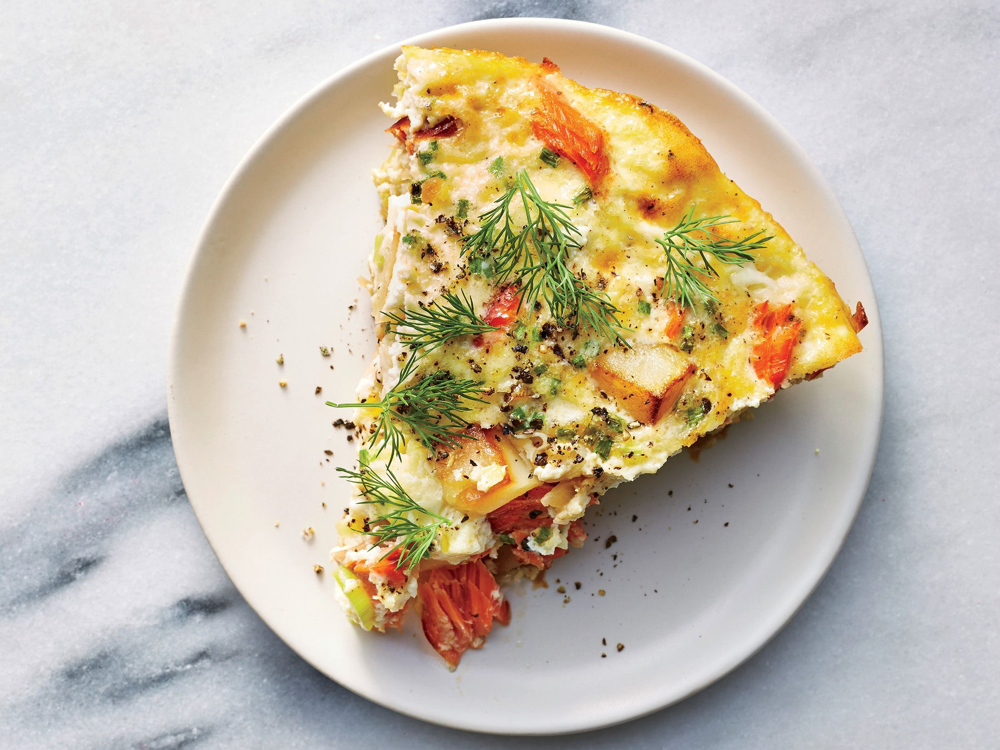

Классический омлет с овощами
Рецепт:
- Яйца - 4 шт
- Кабачок - 150 г
- Фасоль стручковая - 50 г
- Перец красный болгарский - 100 г
- Сыр - 50 г
- Соль - по вкусу
Приготовление
- Сыр натираем на крупной терке, овощи нарезаем мелкими кубиками.
- В сковороде разогреваем сливочное масло, бросаем туда овощи, обжариваем 1-2 минуты, после чего вливаем в сковороду взбитые яйца. Взбивать яйца нужно совсем немного - чтобы белок и желток смешались.
- Добавляем соль и перец по вкусу. Жарим омлет 5-7 минут на среднем огне.
- Затем посыпаем тертым сыром, накрываем крышкой и жарим еще 1-2 минуты - пока сыр не расплавится.